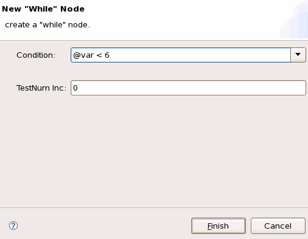
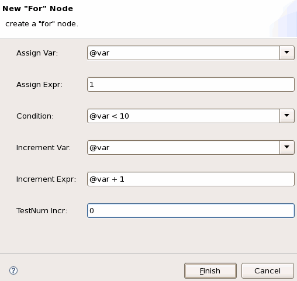

Flow control nodes
Flow control nodes represent conditional branches and loops in the testflow. When you insert any of the flow control nodes, the appropriate dialog window appears in which you state the conditions (you can also get this dialog window by double-clicking the node).
- if ... then
- repeat ... until
- while ... do
- for ... do
If ... then / repeat ... until / while ... do
The dialog window is similar to that of the figure below.
Condition |
Enter the condition. |
TestNum Inc |
The number which is added to the test number. |

For ... do
The dialog window is shown as below.
Assign Var |
Assign a variable. |
Assign Expr |
Assign the initial value by directly giving the value or by giving an expression. |
Condition |
Enter the condition. |
Increment Var |
The variable that is incremented. |
Increment Exp |
The expression that defines how the variable is incremented. |
Test Num Incr |
The number which is added to the test number. |

Clicking the slash to the right of the Assign Var, Condition and Increment Var text boxes will open a list that contains all the variables defined for the testflow.
The condition in the flow control nodes is an arithmetic and/or boolean expression which may contain the following operators,
+, -, *, /, >, >=, <, <=, ==, !=, (, ), and, or,
not
and operands,
- (<expression>)
- <var_name>
- <real_number>
- "<string>"
- <string_expression>
- Built-in functions
Example
Expressions which can be used as the condition might be:
fail (functional) and (x <=6)has_run (test1) and not (variable2 > (((13/7)-1)*5))not (variable1 == variable2) or ((variable3 - 1)<10)
Functional changes
- Introduced before SmarTest 6.3.2